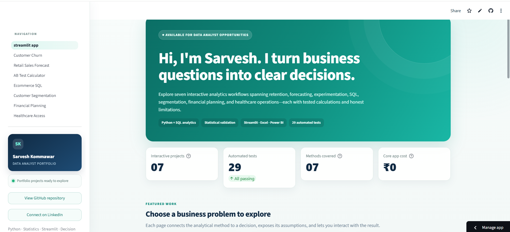

01 · Analytics
Data Analytics Decision Portfolio
Seven interactive workflows connect analytical methods to business decisions: churn prioritisation, retail forecasting, A/B testing, e-commerce SQL, customer segmentation, financial planning and healthcare access.
- My role
- Analysis, modelling, app development and documentation
- Tools
- Python, SQL, DuckDB, Streamlit and Power BI
- Evidence
- Seven workflows, 22 automated tests and CI
- Data
- Clearly labelled public and synthetic sources
What made this difficultKeeping seven projects consistent in structure, documentation, testing and deployment rather than leaving them as disconnected notebooks.
